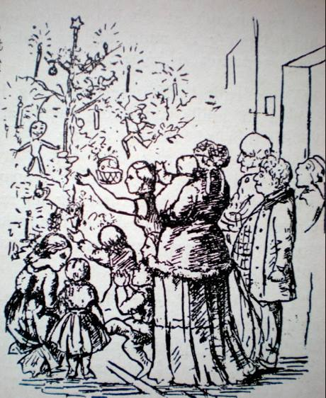
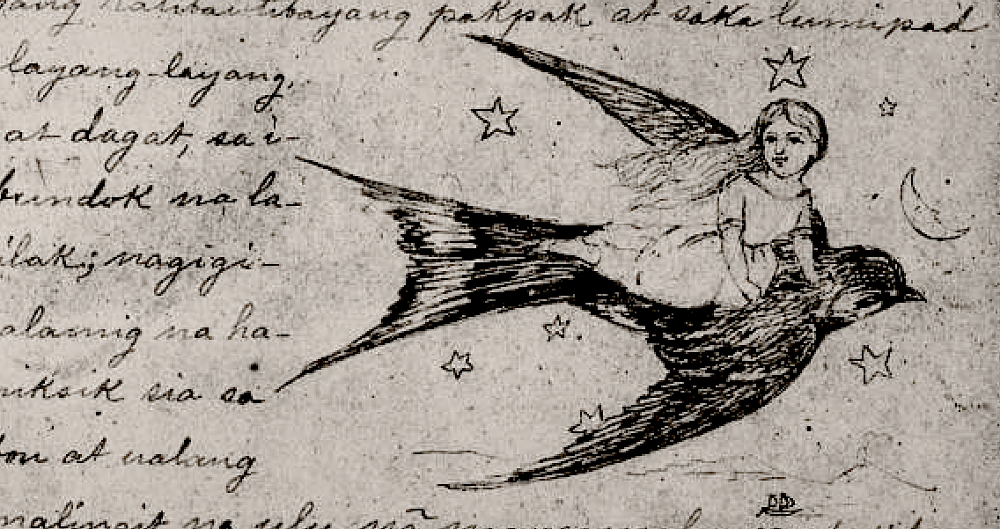
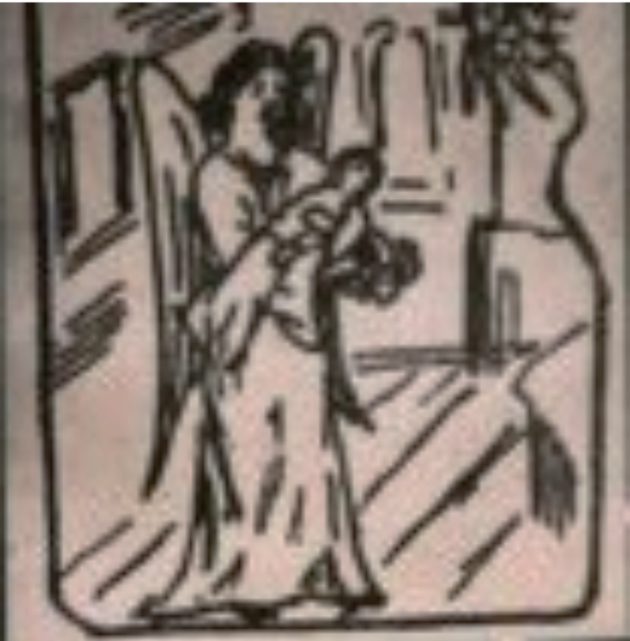
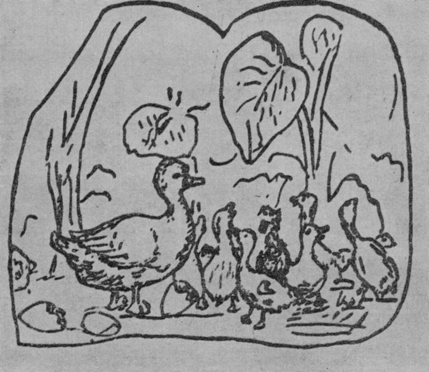

Ang Puno ng Pino ay isang kwento ni Hans Christian Andersen. Ito ay tungkol sa isang maliit na puno ng pino na gustong gusto nang maging isang malaking puno tulad ng mga nasa paligid niya. Marami ng dumaan na mga panahon at marami na rin siyang nasaksihang kagandahan ng kalikasan tulad ng araw, mga ulap, at mga ibon. Ngunit, wala siyang pakialam para rito at gusto niya lamang maging isang malaki at magandang puno ng pino. Sinabihan siya ng mga ibon na ang mga malalaking puno ay sinisibak at ginagawang kahoy ng mga malalaking barko. Siya ay nahumaling sa posibilidad na ito ngunit nag-iba ito nang malaman niyang may ibang puno na pinuputol upang gawing Christmas tree at napapalamutian. Isang taglamig, ang puno ng pino ay pinutol na at dinala sa isang malaking bahay na kung saan pinalamutian siya ng kung anu-anong magagandang bagay.
read more...

Si Gahinlalaki na batang babaeng kasinlaki ng hinlalaki, ubod ng ganda, mabait, at magaling umawit. Sa kaniyang paglaki, marami siyang mga paghihirap na binaka hanggang sa matagpuan niya ang kaniyang prinsipe at maging prinsesa siya ng mga bulaklak.
read more...

Ang Babaeng May Dalang Sakafuego ay isang kwento ni Hans Christian Andersen na tungkol sa isang batang babaeng nagbebenta ng posporo sa bisperas ng bagong taon, na giniginaw at nakayapak lamang. Hindi siya makauwi sa takot na siya ay matatamaan sa kanyang ama sa hindi niya pagbenta ng posporo, kaya siya ay nagtago muna sa maliit na eskinita at nagsindi ng posporo para siya ay magpainit. Siya ay hindi napapansin ng mga dumadaan kaya’t mas lalong siyang hindi nakakabenta at nilamig. Sa apoy ng posporo, siya ay nakakita ng iba’t-ibang magagandang bagay tulad ng mainit na kalan, inihaw na gansa, at isang malaki at grandeng Christmas tree. Unti-unti itong nawawala sa pagkawala ng sindi ng posporo. Kinalaunan ay nakakita siya ng isang bulalakaw na nagpaalala sa kanya sa lola niya, kaya’t sa sunod na posporo, ang lola niya ang nakita niya. Sinindihan niya lahat ng posporo upang tuluyan niyang makita ang kanyang lola. Nang mawala na ang sindi ng mga posporo, ang batang babae ay namatay sa lamig, at ang kaluluwa ng kanyang lola ay sinamahan siya sa langit. Nakita na lamang siya ng mga dumadaan na nakangiti, hindi malalaman ang kanyang mga nakita at ang kanyang tuwa ngayong kasama na niya ang kanyang lola sa langit.
read more...

Ang kuwentong ito ay tungkol isang anghel ng Diyos na dumating sa lupa upang dalhin ang mga batang namatay sa langit. Nakatuon ang kwento sa isang bata na sa kanilang paglalakbay, ipinapakita ng anghel ang mga paboritong lugar nito at nag-aabot ng mga bulaklak mula roon na dadalhin sa langit. Sa paglipad, natagpuan nila ang isang rosas na may bahagi nang nasira, ngunit hiniling ng bata na dalhin ito sa langit upang muling mamulaklak sa hardin ng Diyos. Sinamahan ito ng mga magagandang bulaklak at mga simpleng mga bulaklak na dala-dala ng anghel.
Sa halip na direktang pumunta sa langit, nagdesisyon ang anghel na bumaba sila sa isang madilim na kalye kung saan natagpuan nila ang mga kalat na basag na paso ng bulaklak at isang pirasong lupa. Ipinaliwanag ng anghel na ito ay nagdulot ng tunay na kasiyahan sa isang may sakit na batang lalaki na nagtanim at namulaklak ng bulaklak.
Sa pagdating nila sa langit, tinanggap ng Diyos ang bata sa Kanyang puso at binigyan siya ng mga pakpak upang makalipad kasama ng anghel. Hinaplos ng Diyos ang lahat ng mga bulaklak sa Kanyang puso, ngunit hinalikan niya ang nalantang bulaklak ng parang at ito'y nagkaroon ng tinig. Ang batang may sakit at ang bulaklak ng parang na minsang nalanta at itinapon sa kalye ay nagkatagpo sa langit, kung saan lahat ay puno ng kaligayahan at papuri.
read more...

Sa isang lawa, may isang pato na nangitlog. Ang lahat ng mga itlog bukod sa pinakamalaki ay napisa. Nagpasya siyang hintayin ang huling itlog na mapisa dahil kilala ang mga ina sa kanilang debosyon at pagmamahal. Nang napisa ang itlog, nakita niya ang isang pangit at kulay-abo na pato. Ang pato kinasusuklaman ng lahat. Marami sa mga maliliit na pato ang nagsimulang magreklamo tungkol sa pangit na pato. Labis siyang nanlumo kaya tumakas siya sa kanyang bahay. Sa kanyang paglalakbay, nakasalubong niya ang isang matandang babae. Niyakap niya ito, ngunit nang matingnan siya ng mabuti, sumigaw siya at hiniling na umalis siya. Buong araw at gabi siyang umiiyak mag-isa. Isang araw, nakatagpo siya ng isang lawa, natuwa siya at lumangoy. Ang kawawang pato ay naipit sa lawa dahil nagbago sa malamig na panahon. Dinala siya sa kanyang tahanan ng isang mapagmahal na magsasaka na nag-aalaga sa kanya ng mabuti. Hindi nagtagal ay nakabawi ang pato ng lakas ng loob, at iniwan siya ng magsasaka sa lawa. Nakita niya ang maraming magagandang sisne doon. Iniyuko niya ang kanyang ulo sa kahihiyan at nagulat nang makita niya na siya ay naging isang magandang sisne. Matapos ang lahat ng kanyang mga problema, sa kalaunan ay natagpuan niya ang kaligayahan.
read more...